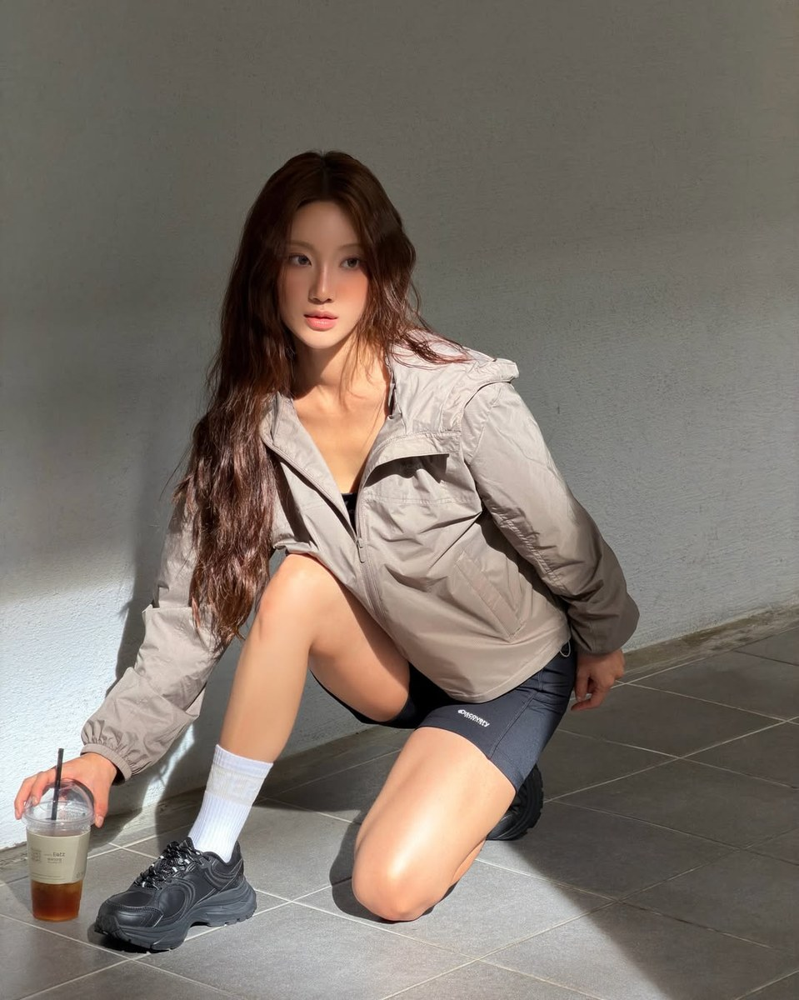
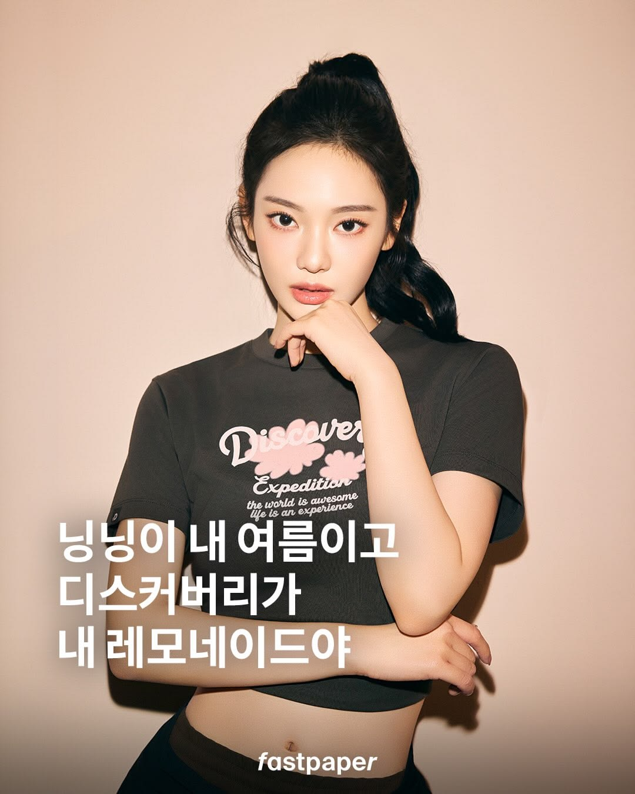
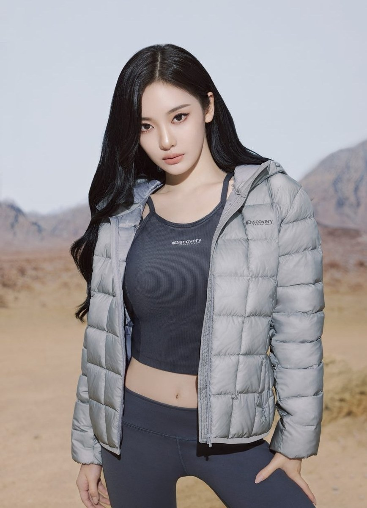
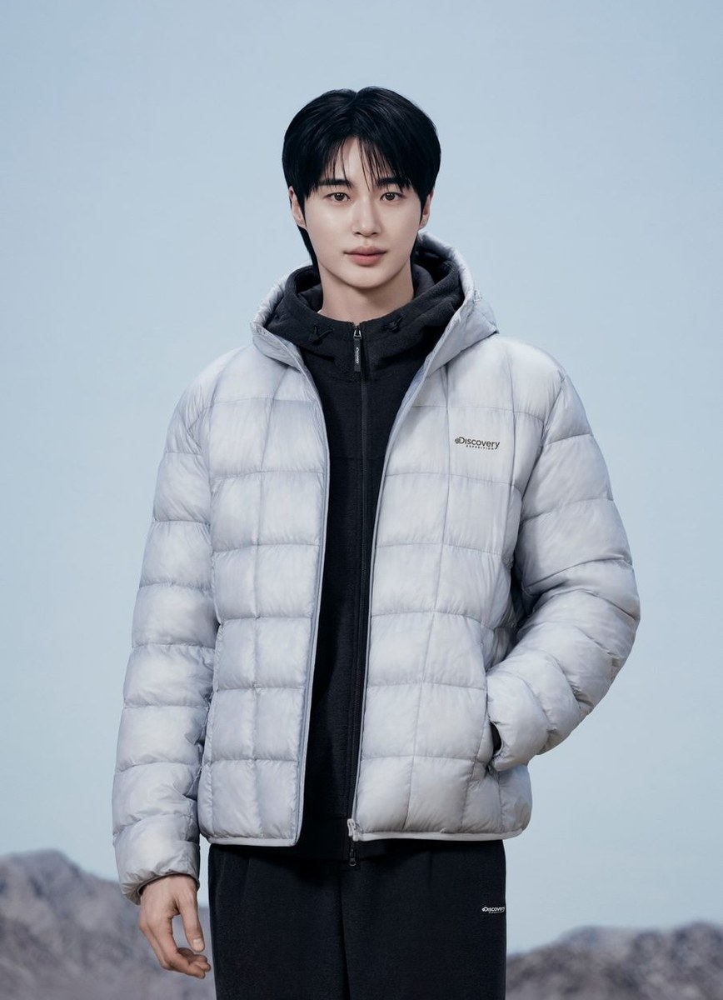
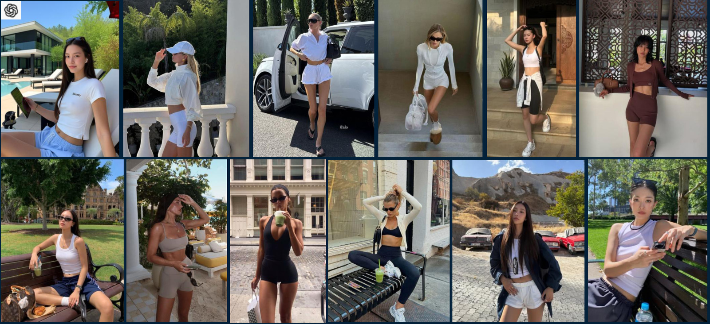
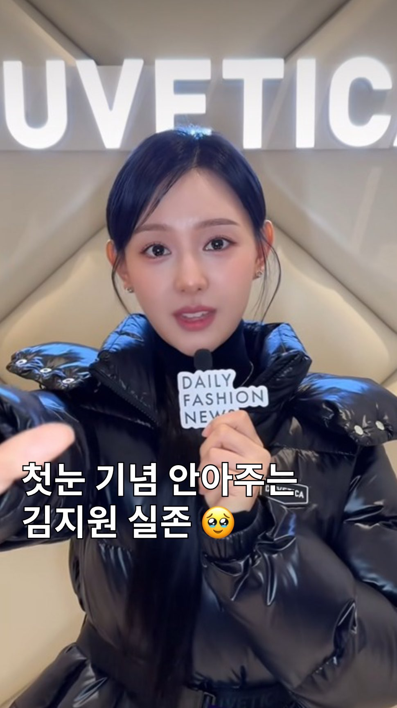
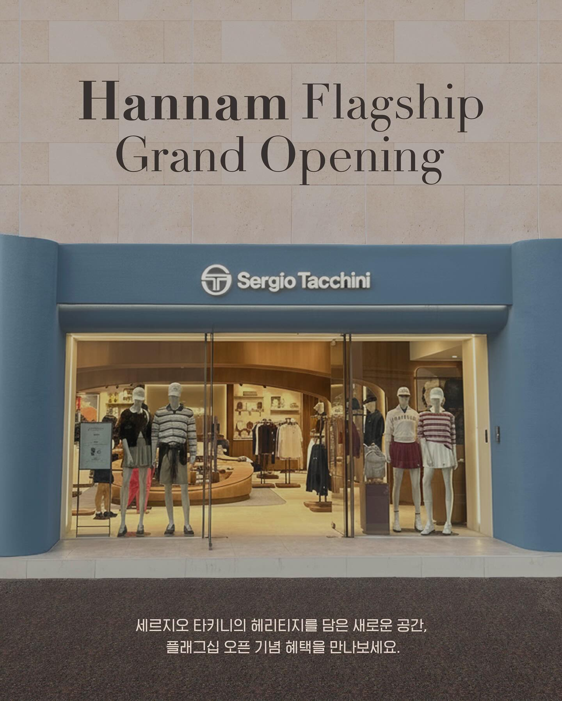

가벼움으로 완성하는
웰니스 라이프스타일
가벼움이라는 핵심 효익을
시즌 전체의 이야기로 설정
CONTENT PLANNING / MEDIA & CREATORS
타깃과 채널에 맞는 소재를 기획하고,
뉴미디어 매체·인플루언서와 협업해
브랜드 메시지를 전달하는 이난주입니다.


SELECTED WORK / 01–03
실제 발행 → 메시지 편집 → 비주얼 브리프
결과물로 살펴보는 콘텐츠 기획 역량

01 / 실제 발행DISCOVERY / NEW MEDIA CONTENT


02 / 완성 작업물DISCOVERY / 26FW COMMUNICATION

03 / 비주얼 기획 가이드DISCOVERY / 26SS CREATOR BRIEF
타깃·소재·메시지 기획, 매체·인플루언서 협업, 제작 방향 협의와 결과물 검수, 성과 분석
DISCOVERY EXPEDITION / 닝닝 26SS 캠페인
브랜드의 ‘액티브 웰니스’ 메시지에 여름과 레모네이드 키워드를 결합했습니다. 웹 크롤링과 AI 리서치로 소비자 관심사와 콘텐츠 트렌드를 살피고, 매체별 타깃에 맞춰 소재와 메시지를 구체화했습니다.
시즌 키워드를 비주얼과 함께 전달
메리제인 슈즈와 착장에 주목
앰버서더의 화제성을 콘텐츠에 반영
MESSAGE BRIEF
브랜드의 방향과 시즌 상품을 연결
매체의 독자와 표현 방식에 맞는 소재 구성
매체·유관 조직과 요청사항 협의
CAMPAIGN DISTRIBUTION
상품의 기능과 구매 정보
관심 고객에게 콘텐츠 노출
착장과 시즌 무드 전달
경험과 관심의 자발적 확산
MY ROLE
대표 상품 프레시벤트
월간 매출 순위 진입
주요 Instagram 해시태그 내 집행 콘텐츠 노출을 확인했습니다. 매출 순위는 상품 성과로, 개별 콘텐츠의 단독 기여를 의미하지 않습니다.
DISCOVERY EXPEDITION / 26FW 콘텐츠 구성·메시지 편집
‘액티브 웰니스’ 메시지를 앰버서더 스타일링, 핵심 상품 정보, 생활 착장의 흐름으로 구성했습니다. 기능 설명에 머무르지 않고 운동·이동·여행·출근 등 사용 상황과 추천 문장으로 연결해, 하나의 브랜드 이야기를 완성했습니다.
DISCOVER MY ACTIVE WELLNESS
02 / FEATURE → CONTEXT → COPY
원문 카피와 그 안에 담은 메시지 구조
가벼움으로 완성하는
웰니스 라이프스타일
가벼움이라는 핵심 효익을
시즌 전체의 이야기로 설정
운동과 이동, 여행과 일상 등
다양한 순간을 자연스럽게 연결합니다.
기능을 필요로 하는 순간을 제시해
고객이 자기 생활을 떠올리도록 구성
출퇴근용 한 벌이면
이거예요
‘일교차 큰 가을 아우터’ 정보를
구체적인 선택 기준으로 정리
03 / EVERYDAY STORY
원본 작업물에 사용한 생활 착장 비주얼
가볍게 디스커버리를 걸치고 나서는 하루,
그 자체가 액티브 웰니스입니다
화보와 상품 설명을 일상의 메시지로 연결하는 마무리
MY ROLE / CONTENT EDITING
사진 제작은 파트너의 작업이며,
나의 역할은 콘텐츠 구성과 메시지 편집입니다.
완성된 사내 커뮤니케이션 작업물을 발췌한 사례입니다. 공식 SNS 발행 실적이나 외부 채널 성과로 제시하지 않습니다.
DISCOVERY EXPEDITION / 26SS 인플루언서 콘텐츠 브리프
같은 웰니스 메시지도 계절과 상품에 따라 다른 생활 장면으로 전달하도록 기획했습니다. 봄은 도심의 움직임, 여름은 여행지의 휴가 무드를 중심으로 배경·착장·포즈를 이미지 예시로 구체화했습니다.
러닝과 이동, 카페와 거리의 일상 장면
도심 거리·카페 등 익숙한 생활 공간
바람막이와 액티브 웨어의 일상 스타일링
걷기·이동·가벼운 활동의 자연스러운 순간
리조트와 야외 공간에서 즐기는 여름 무드
여행지·리조트·야외의 휴가 분위기
여름 상품을 여행 맥락에 맞춘 스타일링
휴식과 가벼운 움직임을 담은 장면
이미지를 누르면 가이드를 확대해 볼 수 있습니다. 내 담당 범위는 콘텐츠 방향 기획과 협업 가이드입니다.
MY ROLE / VISUAL BRIEF
여행·라이프스타일의 장면을
구체적인 콘텐츠 방향으로 전환
여름 슈즈의 메리제인 스타일과 기능을 함께 전달하기 위한 협업 제안입니다. 완성된 발행 사례와 구분해 선정 기준과 제안 포맷을 정리했습니다.
상품의 무드와 라이프스타일
상품에 관심을 가질 타깃
최근 콘텐츠의 조회와 반응
추천과 구매 접점 연결
일상 착장·추천 콘텐츠 → 댓글 참여·라이브 커머스 연계안
체형·스타일별 선택 기준 → 상품 큐레이션 기획전 연계안
파트너 선정 기준·콘텐츠 포맷·채널 연계안을 제안한 기획 사례이며, 실제 촬영·발행 결과나 달성 성과로 제시하지 않습니다.
F&F / 마케팅 KPI 대시보드와 운영 개선
브랜드·채널별 성과를 지속적으로 확인할 수 있도록 데이터팀과 협업해 분석 요건과 데이터 조회 화면을 기획했습니다. 시장·소비자 관심 키워드와 KPI를 함께 해석하고, 콘텐츠 기획과 인플루언서 시딩 전략에 반영할 개선안을 제안했습니다.
INSIGHT → ACTION
브랜드 이미지와 콘텐츠 완성도에 더해, 실제 구매 정보 탐색에 쓰이는 계정인지 살펴보는 전략 변경안을 제시했습니다.
내 역할은 KPI 설정, 분석 요건·조회 화면 기획, 데이터 해석과 전략 제안입니다. 데이터 적재와 접근·보안 관리는 데이터팀이 담당했습니다.
콘텐츠 집행 현황·참여·상품 반응 검토
검색 키워드·시장 트렌드·계정 특성 분석
메시지·매체·인플루언서 운영 방향 제안
SUPPORTING EXPERIENCE / 05–08
오프라인 경험 · 고객 참여 · 제작 효율 · 매체 운영

05 / DUVETICA앰버서더 캠페인과 더현대 서울 팝업을 PR·옥외·디지털 콘텐츠로 연결했습니다. 채널별 메시지와 비주얼의 일관성, 제작·검수·배포 일정을 관리했습니다.
담당 업무 캠페인 메시지와 KPI·예산 수립, 제작·배포 일정 조율, 유관부서·대행사 협업, 성과 보고
프로젝트 PR 260건 / 2025년 상반기 BEP 개선에 기여
캠페인 전체 성과이며 개별 콘텐츠의 단독 매출 기여로 표시하지 않았습니다.
 06 / DISCOVERY EXPEDITION
06 / DISCOVERY EXPEDITION변우석 캠페인과 상품 전시, 러닝 체험, 앰버서더 행사를 매체·SNS 콘텐츠로 연결해 ‘액티브 웰니스’ 메시지를 확산했습니다.
담당 업무 현장·홍보 콘텐츠 일정과 요청사항 조율, 접점별 톤앤매너 관리, 매체·인플루언서 콘텐츠 반응 분석 및 보고
39개 매체 / 기사 보도 286건 이상
행사 전체 성과이며 행사 결과 보고서 집계 기준입니다.

07 / SERGIO TACCHINI셀럽 행사, 협업 사은품, AI 포토부스와 지역 공간 프로모션을 기획해 매장 방문 경험이 온라인 공유로 이어지도록 구성했습니다.
담당 업무 행사 타임라인과 운영 프로세스, 고객 프로모션, 지역 공간과 온라인 연계 기획
매장 관련 오가닉 콘텐츠 500개 이상
셀럽 행사와 고객 참여 프로모션을 포함한 프로젝트 전체 성과입니다.
매거진 콘텐츠 포화에 대응해 브랜드별 광고 수요와 일정을 묶어 집행 조건을 협의했습니다. 데일리패션뉴스, 아이즈매거진, 패스트페이퍼, 트립고잉과 단가·노출 일정·정산을 조율했습니다.
담당 업무 패키지 구성, 매체별 단가와 노출 조건 협의, 집행 일정 및 정산 관리
건별 광고 비용 14–21% 절감 / 해당 매체 연간 광고비 약 20% 절감
HOW I WORK / PLANNING & COLLABORATION
상품 특성과 브랜드 방향, 콘텐츠 트렌드를 함께 검토해 소재와 메시지를 정합니다.
파트너 선정 기준, 콘텐츠 포맷과 비주얼 방향을 정리하고 기획 의도를 전달합니다.
매체·인플루언서·유관부서와 요청사항을 협의하고 일정과 결과물을 검수합니다.
콘텐츠 반응과 캠페인 지표를 검토해 후속 소재, 파트너와 운영 방향의 개선안을 제안합니다.
| 나의 역할 | 매체·크리에이터·제작 파트너 |
|---|---|
| 타깃·소재·메시지 기획과 브리프 | 파트너의 콘텐츠 표현과 제작 |
| 요청사항 협의, 일정 조율과 검수 | 촬영·편집·디자인과 채널 발행 |
| 콘텐츠·캠페인 분석과 개선안 제안 | 콘텐츠 실행 정보와 반응 지표 공유 |
프로젝트에 따라 담당 범위가 달라지며, 각 사례에 실제 기획·협업 범위를 표시했습니다.
NEXT / 여기어때에서 이어갈 일
매체와 크리에이터의 특성에 맞춰 콘텐츠를 기획한 경험, 하나의 브랜드 메시지를 다양한 접점으로 확장한 기획 관점을 여기어때 콘텐츠에 적용하고 싶습니다. 공식 채널과 브랜드 오리지널 콘텐츠가 고객의 관심사에 맞는 포맷으로 전개될 수 있도록 기여하겠습니다.
ABOUT ME
NANJU LEE / CONTENTS MARKETER
DISCOVERY EXPEDITION · DUVETICA
SERGIO TACCHINI · SUPRA
브랜드 메시지와 소비자 관심사를 바탕으로 협업 콘텐츠를 기획하고, 뉴미디어 매체·인플루언서·유관부서와 제작 방향과 일정을 조율해왔습니다. 콘텐츠와 캠페인의 성과 분석을 후속 전략 제안으로 연결합니다.
NEXT CHAPTER
연락처와 상세 경력은 제출한 이력서에서 확인하실 수 있습니다.
서로 다른 인물의 스타일을 나란히 배치해, 같은 상품군이 다양한 일상에 어울린다는 메시지를 전달했습니다.